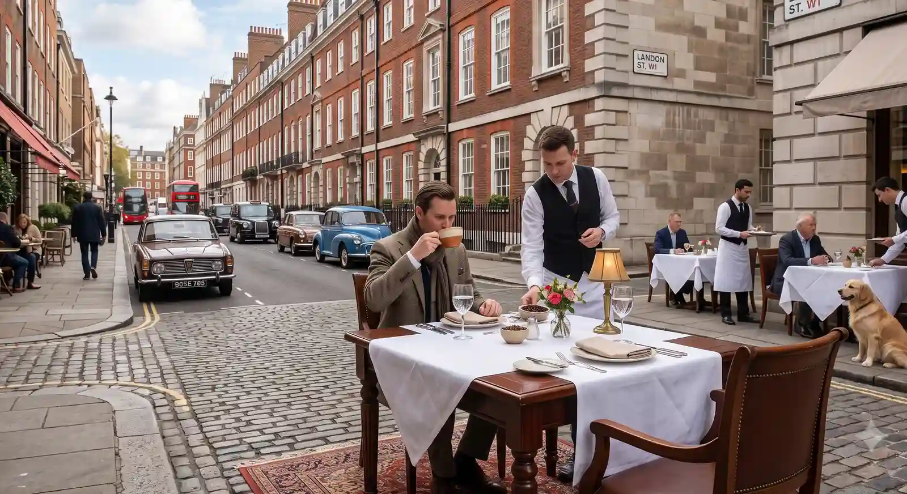

We Believe Coffee Should Be An Experience.
Not just a morning rush caffeine fix, but a deliberate sensory pause that connects you with soil, season, and craft.
How STACKLY Coffee Began
STACKLY was born from a simple dissatisfaction with burnt, over-extracted commodity coffee. In 2026, our founders embarked on journeys through the misty coffee highlands of Yirgacheffe and the steep mountain farms of Huila, discovering the astounding spectrum of fruit, floral, and wine notes inherent in ripe Arabica cherries.
We set out to build an artisan roasting lab that treats coffee with the reverence of fine wine: sourcing solely specialty grade beans, honoring seasonal harvests, and preserving every nuanced aromatic note through gentle drum profiling.
READ OUR HARVEST DIARYQuality From Source To Cup
Three fundamental tenets that remain non-negotiable across every bag we seal and every shot we pull.
Intentional Sourcing
Direct relationships with producers who care deeply about regenerative soil practices, fair wages, and selective hand-picking.
Thermal Harmony
We avoid charred over-roasting. Instead, we use gentle convective heat transfer that coaxes out the bean's intrinsic terroir and sweetness.
Human Hospitality
Specialty coffee should be approachable, welcoming, and warm. We meet you where you are, whether you love dark espresso or floral filter.

Coffee-Growing Regions & Relationships
We buy coffee exclusively from micro-lots located at minimum altitudes of 1,200 meters. High altitude prolongs cherry maturation, yielding denser beans with complex citric and malic acidity.
By cutting out middlemen, we pay farm estates up to 80% above standard Fair Trade minimums. This directly finances community schooling, wet mill water treatment, and shade-canopy tree planting.
How Our Beans Are Roasted
Inside our roastery, we operate cast-iron drum machines engineered for uniform heat distribution. We track Rate of Rise (RoR), exhaust moisture, and drum temperature within tenths of a degree second-by-second.
Every single batch is cupped and verified against an SCA flavor score before packaging in nitrogen-flushed, one-way valve pouches.
The Craft of Extraction
Great beans demand dialed technique. Our baristas undergo rigorous sensory and brew training, learning how water chemistry, grind micrometer distribution, and agitation influence solubility.
From free-pour latte art swans to precision gooseneck pour-overs, every beverage served is a tactile manifestation of human dedication.
Café Culture & Community
Our cafés across Bengaluru, Hyderabad, Chennai, and Coimbatore are intentionally designed as third places: spaces where thinkers, creators, and neighbors gather to read, write, dream, and connect.
We regularly host public weekend cupping workshops, home barista masterclasses, and acoustic storytelling sessions.
Come Have A Cup With Us
Whether you want to try our Ethiopian single-origin pour over, discuss roast curves with our team, or pick up a bag for home, our doors are always open.